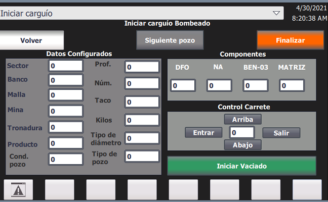

Pablo Ruz Donoso
Ingeniero Civil Mecánico


Sobre Mi
Ingeniero Civil Mecánico, Universidad de Santiago de Chile. Me he desempeñado en áreas tecnológicas y educativas, donde pude desarrollar aptitudes como la comunicación efectiva, capacidad de organización, responsabilidad y creatividad. Actualmente, trabajo como ingeniero de desarrollo en Urbanatika, liderando equipos de soluciones tecnológicas relacionadas al Internet de las Cosas, proyectos de ingeniería mecánica y automatización , prototipado rápido y desarrollo de productos.